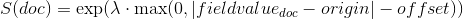
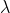
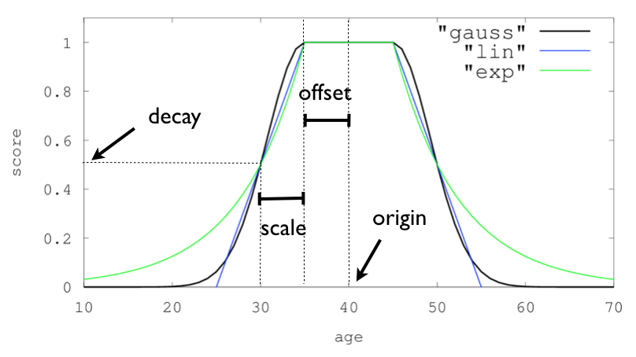

本地英文版地址: ../en/query-dsl-function-score-query.html
function_score 允许你修改查询检索到的文档的分数。
例如，如果一个评分函数的计算开销很大，并且它足以计算经过筛选的一组文档的分数，那么这就很有用了。
要使用 function_score，用户必须定义一个查询和一个或多个函数，这些函数为查询返回的每个文档计算一个新分数。
function_score 只能用于一个函数，如下所示：
GET /_search
{
"query": {
"function_score": {
"query": { "match_all": {} },
"boost": "5",
"random_score": {},
"boost_mode":"multiply"
}
}
}
|
受支持的函数列表请参考 函数评分。 |
此外，几个功能可以组合。在这种情况下，我们可以选择只在文档匹配指定的 filter 查询时应用该函数。
GET /_search
{
"query": {
"function_score": {
"query": { "match_all": {} },
"boost": "5",
"functions": [
{
"filter": { "match": { "test": "bar" } },
"random_score": {},
"weight": 23
},
{
"filter": { "match": { "test": "cat" } },
"weight": 42
}
],
"max_boost": 42,
"score_mode": "max",
"boost_mode": "multiply",
"min_score" : 42
}
}
}
|
整个查询的提高(boost)。 |
|
|
受支持的函数列表请参考 函数评分。 |
每个函数的 filter 查询产生的分数并不重要。
如果函数中没有给出任何 filter，这相当于指定 "match_all": {}。
首先，每个文档由定义的函数评分。
参数 score_mode 指定如何组合计算出的分数：
|
|
分数相乘（默认） |
|
|
分数相加，求和 |
|
|
分数的平均值 |
|
|
应用第一个具有匹配 filter 的函数 |
|
|
取分数最大值 |
|
|
取分数最小值 |
因为分数可以在不同的范围内(例如，衰减函数(decay function)在0到1之间，而 field_value_factor 是任意的)，而且有时函数对分数的不同影响是可取的，所以可以使用用户定义的 weight(权重) 来调整每个函数的分数。
weight可以在 functions数组(上面的例子)中按每个函数定义，并与相应函数计算的分数相乘。
如果给定 weight 时没有任何其他函数声明，weight 就会作为一个函数返回weight 。
如果 score_mode 被设置为 avg，则单个分数将被 weighted(加权) 平均。
例如，如果两个函数返回 1 和 2 分，它们各自的权重分别为 3 和 4，那么它们的得分将合并为 (1*3+2*4)/(3+4) 而不是 (1*3+2*4)/2。
通过设置 max_boost 参数，可以限制新的分数不超过某个限制。
max_boost 的默认值是 FLT_MAX。
新计算的分数与查询的分数相结合。 参数 boost_mode 定义了如何操作：
|
|
查询分数和函数分数相乘（默认） |
|
|
只使用函数分数，而忽略查询分数 |
|
|
查询分数和函数分数相加 |
|
|
平均值 |
|
|
查询分数和函数分数的最大值 |
|
|
查询分数和函数分数的最小值 |
默认情况下，修改分数不会改变匹配的文档。
要排除不满足某个分数阈值的文档，可以将参数 min_score 设置为所需的分数阈值。
要让 min_score 起作用，需要对查询返回的所有文档进行评分，然后逐一过滤掉。
-
script_score -
weight -
random_score -
field_value_factor -
衰减函数 (decay function):
gauss,linear,exp
script_score 函数允许包裹另一个查询，并使用脚本表达式使用从文档中的其他 数值(numeric) 字段值派生的计算定制该查询的评分。
这里是一个简单的例子:
GET /_search
{
"query": {
"function_score": {
"query": {
"match": { "message": "elasticsearch" }
},
"script_score" : {
"script" : {
"source": "Math.log(2 + doc['likes'].value)"
}
}
}
}
}
在 Elasticsearch 中，所有文档的评分都是一个 32 位的浮点数。
如果 script_score 函数生成了一个精度更高的分数，那么它将被转换为最接近的 32 位浮点数。
同样，分数必须是非负的。 否则，Elasticsearch 返回一个错误。
在不同的脚本字段值和表达式之上，可以使用 _score 脚本参数根据包裹的查询来检索分数。
Scripts compilation is cached for faster execution. If the script has parameters that it needs to take into account, it is preferable to reuse the same script, and provide parameters to it:
GET /_search
{
"query": {
"function_score": {
"query": {
"match": { "message": "elasticsearch" }
},
"script_score" : {
"script" : {
"params": {
"a": 5,
"b": 1.2
},
"source": "params.a / Math.pow(params.b, doc['likes'].value)"
}
}
}
}
}
Note that unlike the custom_score query, the score of the query is multiplied with the result of the script scoring.
If you wish to inhibit this, set "boost_mode": "replace"
Weightedit
The weight score allows you to multiply the score by the provided
weight. This can sometimes be desired since boost value set on
specific queries gets normalized, while for this score function it does
not. The number value is of type float.
"weight" : number
Randomedit
The random_score generates scores that are uniformly distributed from 0 up to
but not including 1. By default, it uses the internal Lucene doc ids as a
source of randomness, which is very efficient but unfortunately not
reproducible since documents might be renumbered by merges.
In case you want scores to be reproducible, it is possible to provide a seed
and field. The final score will then be computed based on this seed, the
minimum value of field for the considered document and a salt that is computed
based on the index name and shard id so that documents that have the same
value but are stored in different indexes get different scores. Note that
documents that are within the same shard and have the same value for field
will however get the same score, so it is usually desirable to use a field that
has unique values for all documents. A good default choice might be to use the
_seq_no field, whose only drawback is that scores will change if the document
is updated since update operations also update the value of the _seq_no field.
It was possible to set a seed without setting a field, but this has been
deprecated as this requires loading fielddata on the _id field which consumes
a lot of memory.
GET /_search
{
"query": {
"function_score": {
"random_score": {
"seed": 10,
"field": "_seq_no"
}
}
}
}
Field Value factoredit
The field_value_factor function allows you to use a field from a document to
influence the score. It’s similar to using the script_score function, however,
it avoids the overhead of scripting. If used on a multi-valued field, only the
first value of the field is used in calculations.
As an example, imagine you have a document indexed with a numeric likes
field and wish to influence the score of a document with this field, an example
doing so would look like:
GET /_search
{
"query": {
"function_score": {
"field_value_factor": {
"field": "likes",
"factor": 1.2,
"modifier": "sqrt",
"missing": 1
}
}
}
}
Which will translate into the following formula for scoring:
sqrt(1.2 * doc['likes'].value)
There are a number of options for the field_value_factor function:
|
|
Field to be extracted from the document. |
|
|
Optional factor to multiply the field value with, defaults to |
|
|
Modifier to apply to the field value, can be one of: |
| Modifier | Meaning |
|---|---|
|
Do not apply any multiplier to the field value |
|
Take the common logarithm of the field value.
Because this function will return a negative value and cause an error if used on values
between 0 and 1, it is recommended to use |
|
Add 1 to the field value and take the common logarithm |
|
Add 2 to the field value and take the common logarithm |
|
Take the natural logarithm of the field value.
Because this function will return a negative value and cause an error if used on values
between 0 and 1, it is recommended to use |
|
Add 1 to the field value and take the natural logarithm |
|
Add 2 to the field value and take the natural logarithm |
|
Square the field value (multiply it by itself) |
|
Take the square root of the field value |
|
Reciprocate the field value, same as |
-
missing - Value used if the document doesn’t have that field. The modifier and factor are still applied to it as though it were read from the document.
Scores produced by the field_value_score function must be
non-negative, otherwise an error will be thrown. The log and ln modifiers
will produce negative values if used on values between 0 and 1. Be sure to limit
the values of the field with a range filter to avoid this, or use log1p and
ln1p.
Keep in mind that taking the log() of 0, or the square root of a
negative number is an illegal operation, and an exception will be thrown. Be
sure to limit the values of the field with a range filter to avoid this, or use
log1p and ln1p.
Decay functionsedit
Decay functions score a document with a function that decays depending on the distance of a numeric field value of the document from a user given origin. This is similar to a range query, but with smooth edges instead of boxes.
To use distance scoring on a query that has numerical fields, the user
has to define an origin and a scale for each field. The origin
is needed to define the “central point” from which the distance
is calculated, and the scale to define the rate of decay. The
decay function is specified as
"DECAY_FUNCTION": {
"FIELD_NAME": {
"origin": "11, 12",
"scale": "2km",
"offset": "0km",
"decay": 0.33
}
}
|
The |
|
|
The specified field must be a numeric, date, or geo-point field. |
In the above example, the field is a geo_point and origin can
be provided in geo format. scale and offset must be given with a unit in
this case. If your field is a date field, you can set scale and offset as
days, weeks, and so on. Example:
GET /_search
{
"query": {
"function_score": {
"gauss": {
"date": {
"origin": "2013-09-17",
"scale": "10d",
"offset": "5d",
"decay" : 0.5
}
}
}
}
}
|
The date format of the origin depends on the |
|
|
The |
|
|
The point of origin used for calculating distance. Must be given as a
number for numeric field, date for date fields and geo point for geo fields.
Required for geo and numeric field. For date fields the default is |
|
|
Required for all types. Defines the distance from origin + offset at which the computed
score will equal |
|
|
If an |
|
|
The |
In the first example, your documents might represents hotels and contain a geo location field. You want to compute a decay function depending on how far the hotel is from a given location. You might not immediately see what scale to choose for the gauss function, but you can say something like: "At a distance of 2km from the desired location, the score should be reduced to one third." The parameter "scale" will then be adjusted automatically to assure that the score function computes a score of 0.33 for hotels that are 2km away from the desired location.
In the second example, documents with a field value between 2013-09-12 and 2013-09-22 would get a weight of 1.0 and documents which are 15 days from that date a weight of 0.5.
Supported decay functionsedit
The DECAY_FUNCTION determines the shape of the decay:
-
gauss -
Normal decay, computed as:

where
 is computed to assure that the score takes the value
is computed to assure that the score takes the value decayat distancescalefromorigin+-offset
See Normal decay, keyword
gaussfor graphs demonstrating the curve generated by thegaussfunction. -
exp -
Exponential decay, computed as:

where again the parameter  is computed to assure that the score takes the value
decayat distancescalefromorigin+-offset
See Exponential decay, keyword
expfor graphs demonstrating the curve generated by theexpfunction. -
linear -
Linear decay, computed as:
 .
.where again the parameter
sis computed to assure that the score takes the valuedecayat distancescalefromorigin+-offsetIn contrast to the normal and exponential decay, this function actually sets the score to 0 if the field value exceeds twice the user given scale value.
For single functions the three decay functions together with their parameters can be visualized like this (the field in this example called "age"):

Multi-values fieldsedit
If a field used for computing the decay contains multiple values, per default the value closest to the origin is chosen for determining the distance.
This can be changed by setting multi_value_mode.
|
|
Distance is the minimum distance |
|
|
Distance is the maximum distance |
|
|
Distance is the average distance |
|
|
Distance is the sum of all distances |
Example:
"DECAY_FUNCTION": {
"FIELD_NAME": {
"origin": ...,
"scale": ...
},
"multi_value_mode": "avg"
}
Detailed exampleedit
Suppose you are searching for a hotel in a certain town. Your budget is limited. Also, you would like the hotel to be close to the town center, so the farther the hotel is from the desired location the less likely you are to check in.
You would like the query results that match your criterion (for example, "hotel, Nancy, non-smoker") to be scored with respect to distance to the town center and also the price.
Intuitively, you would like to define the town center as the origin and
maybe you are willing to walk 2km to the town center from the hotel.
In this case your origin for the location field is the town center
and the scale is ~2km.
If your budget is low, you would probably prefer something cheap above something expensive. For the price field, the origin would be 0 Euros and the scale depends on how much you are willing to pay, for example 20 Euros.
In this example, the fields might be called "price" for the price of the hotel and "location" for the coordinates of this hotel.
The function for price in this case would be
and for location:
Suppose you want to multiply these two functions on the original score, the request would look like this:
GET /_search
{
"query": {
"function_score": {
"functions": [
{
"gauss": {
"price": {
"origin": "0",
"scale": "20"
}
}
},
{
"gauss": {
"location": {
"origin": "11, 12",
"scale": "2km"
}
}
}
],
"query": {
"match": {
"properties": "balcony"
}
},
"score_mode": "multiply"
}
}
}
Next, we show how the computed score looks like for each of the three possible decay functions.
Normal decay, keyword gaussedit
When choosing gauss as the decay function in the above example, the
contour and surface plot of the multiplier looks like this:
Suppose your original search results matches three hotels :
- "Backback Nap"
- "Drink n Drive"
- "BnB Bellevue".
"Drink n Drive" is pretty far from your defined location (nearly 2 km) and is not too cheap (about 13 Euros) so it gets a low factor a factor of 0.56. "BnB Bellevue" and "Backback Nap" are both pretty close to the defined location but "BnB Bellevue" is cheaper, so it gets a multiplier of 0.86 whereas "Backpack Nap" gets a value of 0.66.
Exponential decay, keyword expedit
When choosing exp as the decay function in the above example, the
contour and surface plot of the multiplier looks like this:

Linear decay, keyword linearedit
When choosing linear as the decay function in the above example, the
contour and surface plot of the multiplier looks like this:

Supported fields for decay functionsedit
Only numeric, date, and geo-point fields are supported.
What if a field is missing?edit
If the numeric field is missing in the document, the function will return 1.